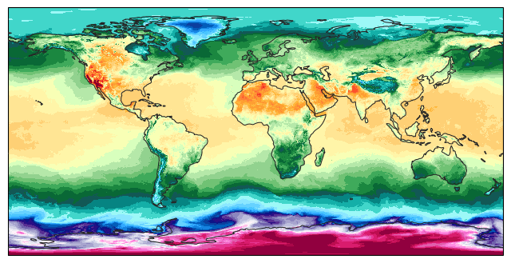
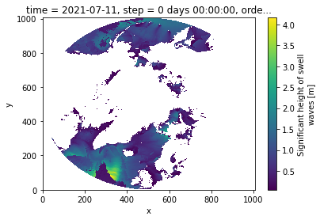

GFS Data#
This demonstrates how to access and plot GFS data.
Note: The product names are not as simple as the HRRR dataset, but we can still get GFS data.
[1]:
from herbie import Herbie
from toolbox import EasyMap, pc
from paint.standard2 import cm_tmp
import matplotlib.pyplot as plt
import cartopy.crs as ccrs
[2]:
H = Herbie("2021-07-11", model="gfs", product="pgrb2.0p25")
✅ Found ┊ model=gfs ┊ product=pgrb2.0p25 ┊ 2021-Jul-11 00:00 UTC F00 ┊ GRIB2 @ aws ┊ IDX @ aws
[3]:
# Show all available sources
H.SOURCES
[3]:
{'aws': 'https://noaa-gfs-bdp-pds.s3.amazonaws.com/gfs.20210711/00/atmos/gfs.t00z.pgrb2.0p25.f000',
'aws-old': 'https://noaa-gfs-bdp-pds.s3.amazonaws.com/gfs.20210711/00/gfs.t00z.pgrb2.0p25.f000',
'ftpprd': 'https://ftpprd.ncep.noaa.gov/data/nccf/com/gfs/prod/gfs.20210711/00/atmos/gfs.t00z.pgrb2.0p25.f000',
'nomads': 'https://nomads.ncep.noaa.gov/pub/data/nccf/com/gfs/prod/gfs.20210711/00/atmos/gfs.t00z.pgrb2.0p25.f000',
'google': 'https://storage.googleapis.com/global-forecast-system/gfs.20210711/00/atmos/gfs.t00z.pgrb2.0p25.f000',
'azure': 'https://noaagfs.blob.core.windows.net/gfs/gfs.20210711/00/atmos/gfs.t00z.pgrb2.0p25.f000'}
[4]:
# Show all available products
H.PRODUCTS
[4]:
{'pgrb2.0p25': 'common fields, 0.25 degree resolution',
'pgrb2.0p50': 'common fields, 0.50 degree resolution',
'pgrb2.1p00': 'common fields, 1.00 degree resolution',
'pgrb2b.0p25': 'uncommon fields, 0.25 degree resolution',
'pgrb2b.0p50': 'uncommon fields, 0.50 degree resolution',
'pgrb2b.1p00': 'uncommon fields, 1.00 degree resolution',
'pgrb2full.0p50': 'combined grids of 0.50 resolution'}
[5]:
ds = H.xarray(":TMP:2 m above")
[6]:
ax = EasyMap(crs=ds.herbie.crs, figsize=[10, 8]).ax
p = ax.pcolormesh(
ds.longitude, ds.latitude, ds.t2m, transform=pc, **cm_tmp(units="K").cmap_kwargs
)
plt.colorbar(
p, ax=ax, orientation="horizontal", pad=0.05, **cm_tmp(units="K").cbar_kwargs
)
ax.set_title(ds.t2m.GRIB_name, loc="right")
ax.set_title(f"{ds.model.upper()}: {H.product_description}", loc="left")
[6]:
Text(0.0, 1.0, 'GFS: common fields, 0.25 degree resolution')

Let’s change it up and plot on a Geostationary projection.
[7]:
ax = EasyMap(crs=ccrs.Geostationary(central_longitude=-100), figsize=[10, 10]).ax
p = ax.pcolormesh(
ds.longitude, ds.latitude, ds.t2m, transform=pc, **cm_tmp(units="K").cmap_kwargs
)
plt.colorbar(
p,
ax=ax,
orientation="horizontal",
pad=0.05,
shrink=0.8,
**cm_tmp(units="K").cbar_kwargs,
)
ax.set_title(ds.t2m.GRIB_name, loc="right")
ax.set_title(f"{ds.model.upper()}: {H.product_description}", loc="left")
[7]:
Text(0.0, 1.0, 'GFS: common fields, 0.25 degree resolution')

MetPy Parsing#
We can also use metpy to parse the GFS grid_mapping. This works because Herbie attempts to parse the grid_mapping from the cfgrib GRIB info.
[8]:
crs = ds.metpy.parse_cf().metpy_crs.item().to_cartopy()
ax = EasyMap(crs=crs, figsize=[8, 8]).ax
p = ax.pcolormesh(
ds.longitude,
ds.latitude,
ds.t2m,
transform=pc,
**cm_tmp(units="K").cmap_kwargs,
)
c:\Users\blaylock\Miniconda3\envs\herbie-dev\lib\site-packages\metpy\xarray.py:355: UserWarning: More than one time coordinate present for variable "gribfile_projection".
warnings.warn('More than one ' + axis + ' coordinate present for variable'

[9]:
ax = EasyMap(crs=ccrs.Robinson(), figsize=[8, 8]).ax
p = ax.pcolormesh(
ds.longitude, ds.latitude, ds.t2m, transform=pc, **cm_tmp(units="K").cmap_kwargs
)

GFS wave data#
This demonstrates getting data from the GFS wave output.
[10]:
H = Herbie("2021-07-11", model="gfs_wave")
✅ Found ┊ model=gfs_wave ┊ product=arctic.9km ┊ 2021-Jul-11 00:00 UTC F00 ┊ GRIB2 @ aws ┊ IDX @ aws
[11]:
H.read_idx()
[11]:
| grib_message | start_byte | end_byte | range | reference_time | valid_time | variable | level | forecast_time | search_this | |
|---|---|---|---|---|---|---|---|---|---|---|
| 0 | 1 | 0 | 430316 | 0-430316 | 2021-07-11 | 2021-07-11 | WIND | surface | anl | :WIND:surface:anl |
| 1 | 2 | 430316 | 1049180 | 430316-1049180 | 2021-07-11 | 2021-07-11 | WDIR | surface | anl | :WDIR:surface:anl |
| 2 | 3 | 1049180 | 1480559 | 1049180-1480559 | 2021-07-11 | 2021-07-11 | UGRD | surface | anl | :UGRD:surface:anl |
| 3 | 4 | 1480559 | 1908977 | 1480559-1908977 | 2021-07-11 | 2021-07-11 | VGRD | surface | anl | :VGRD:surface:anl |
| 4 | 5 | 1908977 | 2174766 | 1908977-2174766 | 2021-07-11 | 2021-07-11 | HTSGW | surface | anl | :HTSGW:surface:anl |
| 5 | 6 | 2174766 | 2497196 | 2174766-2497196 | 2021-07-11 | 2021-07-11 | PERPW | surface | anl | :PERPW:surface:anl |
| 6 | 7 | 2497196 | 3016885 | 2497196-3016885 | 2021-07-11 | 2021-07-11 | DIRPW | surface | anl | :DIRPW:surface:anl |
| 7 | 8 | 3016885 | 3260189 | 3016885-3260189 | 2021-07-11 | 2021-07-11 | WVHGT | surface | anl | :WVHGT:surface:anl |
| 8 | 9 | 3260189 | 3529930 | 3260189-3529930 | 2021-07-11 | 2021-07-11 | SWELL | 1 in sequence | anl | :SWELL:1 in sequence:anl |
| 9 | 10 | 3529930 | 3764423 | 3529930-3764423 | 2021-07-11 | 2021-07-11 | SWELL | 2 in sequence | anl | :SWELL:2 in sequence:anl |
| 10 | 11 | 3764423 | 3968459 | 3764423-3968459 | 2021-07-11 | 2021-07-11 | SWELL | 3 in sequence | anl | :SWELL:3 in sequence:anl |
| 11 | 12 | 3968459 | 4247106 | 3968459-4247106 | 2021-07-11 | 2021-07-11 | WVPER | surface | anl | :WVPER:surface:anl |
| 12 | 13 | 4247106 | 4558849 | 4247106-4558849 | 2021-07-11 | 2021-07-11 | SWPER | 1 in sequence | anl | :SWPER:1 in sequence:anl |
| 13 | 14 | 4558849 | 4873390 | 4558849-4873390 | 2021-07-11 | 2021-07-11 | SWPER | 2 in sequence | anl | :SWPER:2 in sequence:anl |
| 14 | 15 | 4873390 | 5158237 | 4873390-5158237 | 2021-07-11 | 2021-07-11 | SWPER | 3 in sequence | anl | :SWPER:3 in sequence:anl |
| 15 | 16 | 5158237 | 5558669 | 5158237-5558669 | 2021-07-11 | 2021-07-11 | WVDIR | surface | anl | :WVDIR:surface:anl |
| 16 | 17 | 5558669 | 6033915 | 5558669-6033915 | 2021-07-11 | 2021-07-11 | SWDIR | 1 in sequence | anl | :SWDIR:1 in sequence:anl |
| 17 | 18 | 6033915 | 6470116 | 6033915-6470116 | 2021-07-11 | 2021-07-11 | SWDIR | 2 in sequence | anl | :SWDIR:2 in sequence:anl |
| 18 | 19 | 6470116 | 6470116- | 2021-07-11 | 2021-07-11 | SWDIR | 3 in sequence | anl | :SWDIR:3 in sequence:anl |
[12]:
ds = H.xarray("SWELL:1 in sequence", remove_grib=False)
ds
---------------------------------------------------------------------------
GeocalculusError Traceback (most recent call last)
Cell In[12], line 1
----> 1 ds = H.xarray("SWELL:1 in sequence", remove_grib=False)
2 ds
File ~\_GITHUB\Herbie\herbie\archive.py:971, in Herbie.xarray(self, searchString, backend_kwargs, remove_grib, **download_kwargs)
967 backend_kwargs.setdefault("errors", "raise")
969 # Use cfgrib.open_datasets, just in case there are multiple "hypercubes"
970 # for what we requested.
--> 971 Hxr = cfgrib.open_datasets(
972 local_file,
973 backend_kwargs=backend_kwargs,
974 )
976 # Get CF grid projection information with pygrib and pyproj because
977 # this is something cfgrib doesn't do (https://github.com/ecmwf/cfgrib/issues/251)
978 # NOTE: Assumes the projection is the same for all variables
979 grib = pygrib.open(str(local_file))
File c:\Users\blaylock\Miniconda3\envs\herbie-dev\lib\site-packages\cfgrib\xarray_store.py:105, in open_datasets(path, backend_kwargs, **kwargs)
103 backend_kwargs = backend_kwargs.copy()
104 backend_kwargs["squeeze"] = False
--> 105 datasets = open_variable_datasets(path, backend_kwargs=backend_kwargs, **kwargs)
107 type_of_level_datasets = {} # type: T.Dict[str, T.List[xr.Dataset]]
108 for ds in datasets:
File c:\Users\blaylock\Miniconda3\envs\herbie-dev\lib\site-packages\cfgrib\xarray_store.py:93, in open_variable_datasets(path, backend_kwargs, **kwargs)
91 bk["filter_by_keys"] = backend_kwargs.get("filter_by_keys", {}).copy()
92 bk["filter_by_keys"]["paramId"] = param_id
---> 93 datasets.extend(raw_open_datasets(path, bk, **kwargs))
94 return datasets
File c:\Users\blaylock\Miniconda3\envs\herbie-dev\lib\site-packages\cfgrib\xarray_store.py:66, in raw_open_datasets(path, backend_kwargs, **kwargs)
64 datasets = []
65 try:
---> 66 datasets.append(open_dataset(path, backend_kwargs=backend_kwargs, **kwargs))
67 except DatasetBuildError as ex:
68 fbks.extend(ex.args[2])
File c:\Users\blaylock\Miniconda3\envs\herbie-dev\lib\site-packages\cfgrib\xarray_store.py:39, in open_dataset(path, **kwargs)
37 raise ValueError("only engine=='cfgrib' is supported")
38 kwargs["engine"] = "cfgrib"
---> 39 return xr.open_dataset(path, **kwargs)
File c:\Users\blaylock\Miniconda3\envs\herbie-dev\lib\site-packages\xarray\backends\api.py:540, in open_dataset(filename_or_obj, engine, chunks, cache, decode_cf, mask_and_scale, decode_times, decode_timedelta, use_cftime, concat_characters, decode_coords, drop_variables, inline_array, backend_kwargs, **kwargs)
528 decoders = _resolve_decoders_kwargs(
529 decode_cf,
530 open_backend_dataset_parameters=backend.open_dataset_parameters,
(...)
536 decode_coords=decode_coords,
537 )
539 overwrite_encoded_chunks = kwargs.pop("overwrite_encoded_chunks", None)
--> 540 backend_ds = backend.open_dataset(
541 filename_or_obj,
542 drop_variables=drop_variables,
543 **decoders,
544 **kwargs,
545 )
546 ds = _dataset_from_backend_dataset(
547 backend_ds,
548 filename_or_obj,
(...)
556 **kwargs,
557 )
558 return ds
File c:\Users\blaylock\Miniconda3\envs\herbie-dev\lib\site-packages\cfgrib\xarray_plugin.py:109, in CfGribBackend.open_dataset(self, filename_or_obj, mask_and_scale, decode_times, concat_characters, decode_coords, drop_variables, use_cftime, decode_timedelta, lock, indexpath, filter_by_keys, read_keys, encode_cf, squeeze, time_dims, errors, extra_coords)
87 def open_dataset(
88 self,
89 filename_or_obj: T.Union[str, abc.MappingFieldset[T.Any, abc.Field]],
(...)
106 extra_coords: T.Dict[str, str] = {},
107 ) -> xr.Dataset:
--> 109 store = CfGribDataStore(
110 filename_or_obj,
111 indexpath=indexpath,
112 filter_by_keys=filter_by_keys,
113 read_keys=read_keys,
114 encode_cf=encode_cf,
115 squeeze=squeeze,
116 time_dims=time_dims,
117 lock=lock,
118 errors=errors,
119 extra_coords=extra_coords,
120 )
121 with xr.core.utils.close_on_error(store):
122 vars, attrs = store.load() # type: ignore
File c:\Users\blaylock\Miniconda3\envs\herbie-dev\lib\site-packages\cfgrib\xarray_plugin.py:40, in CfGribDataStore.__init__(self, filename, lock, **backend_kwargs)
38 else:
39 opener = dataset.open_fieldset
---> 40 self.ds = opener(filename, **backend_kwargs)
File c:\Users\blaylock\Miniconda3\envs\herbie-dev\lib\site-packages\cfgrib\dataset.py:780, in open_file(path, grib_errors, indexpath, filter_by_keys, read_keys, time_dims, extra_coords, **kwargs)
777 index_keys = compute_index_keys(time_dims, extra_coords)
778 index = open_fileindex(stream, indexpath, index_keys, filter_by_keys=filter_by_keys)
--> 780 return open_from_index(index, read_keys, time_dims, extra_coords, **kwargs)
File c:\Users\blaylock\Miniconda3\envs\herbie-dev\lib\site-packages\cfgrib\dataset.py:722, in open_from_index(index, read_keys, time_dims, extra_coords, **kwargs)
715 def open_from_index(
716 index: abc.Index[T.Any, abc.Field],
717 read_keys: T.Sequence[str] = (),
(...)
720 **kwargs: T.Any,
721 ) -> Dataset:
--> 722 dimensions, variables, attributes, encoding = build_dataset_components(
723 index, read_keys=read_keys, time_dims=time_dims, extra_coords=extra_coords, **kwargs
724 )
725 return Dataset(dimensions, variables, attributes, encoding)
File c:\Users\blaylock\Miniconda3\envs\herbie-dev\lib\site-packages\cfgrib\dataset.py:649, in build_dataset_components(index, errors, encode_cf, squeeze, log, read_keys, time_dims, extra_coords)
647 var_index = index.subindex(paramId=param_id)
648 try:
--> 649 dims, data_var, coord_vars = build_variable_components(
650 var_index,
651 encode_cf,
652 filter_by_keys,
653 errors=errors,
654 squeeze=squeeze,
655 read_keys=read_keys,
656 time_dims=time_dims,
657 extra_coords=extra_coords,
658 )
659 except DatasetBuildError as ex:
660 # NOTE: When a variable has more than one value for an attribute we need to raise all
661 # the values in the file, not just the ones associated with that variable. See #54.
662 key = ex.args[1]
File c:\Users\blaylock\Miniconda3\envs\herbie-dev\lib\site-packages\cfgrib\dataset.py:525, in build_variable_components(index, encode_cf, filter_by_keys, log, errors, squeeze, read_keys, time_dims, extra_coords)
522 header_dimensions = tuple(d for d, c in coord_vars.items() if not squeeze or c.data.size > 1)
523 header_shape = tuple(coord_vars[d].data.size for d in header_dimensions)
--> 525 geo_dims, geo_shape, geo_coord_vars = build_geography_coordinates(first, encode_cf, errors)
526 dimensions = header_dimensions + geo_dims
527 shape = header_shape + geo_shape
File c:\Users\blaylock\Miniconda3\envs\herbie-dev\lib\site-packages\cfgrib\dataset.py:406, in build_geography_coordinates(first, encode_cf, errors, log)
402 geo_shape = (first["Ny"], first["Nx"])
403 try:
404 geo_coord_vars["latitude"] = Variable(
405 dimensions=("y", "x"),
--> 406 data=np.array(first["latitudes"]).reshape(geo_shape),
407 attributes=COORD_ATTRS["latitude"],
408 )
409 geo_coord_vars["longitude"] = Variable(
410 dimensions=("y", "x"),
411 data=np.array(first["longitudes"]).reshape(geo_shape),
412 attributes=COORD_ATTRS["longitude"],
413 )
414 except KeyError: # pragma: no cover
File c:\Users\blaylock\Miniconda3\envs\herbie-dev\lib\site-packages\cfgrib\messages.py:246, in ComputedKeysAdapter.__getitem__(self, item)
244 return getter(self)
245 else:
--> 246 return self.context[item]
File c:\Users\blaylock\Miniconda3\envs\herbie-dev\lib\site-packages\cfgrib\messages.py:168, in Message.__getitem__(self, item)
166 raise ValueError("key type not supported %r" % key_type_text)
167 key_type = KEY_TYPES[key_type_text]
--> 168 return self.message_get(key, key_type=key_type)
File c:\Users\blaylock\Miniconda3\envs\herbie-dev\lib\site-packages\cfgrib\messages.py:131, in Message.message_get(self, item, key_type, default)
129 try:
130 if eccodes.codes_get_size(self.codes_id, item) > 1:
--> 131 values = eccodes.codes_get_array(self.codes_id, item, key_type)
132 else:
133 values = [eccodes.codes_get(self.codes_id, item, key_type)]
File c:\Users\blaylock\Miniconda3\envs\herbie-dev\lib\site-packages\gribapi\gribapi.py:1985, in grib_get_array(msgid, key, ktype)
1983 result = grib_get_long_array(msgid, key)
1984 elif ktype is float:
-> 1985 result = grib_get_double_array(msgid, key)
1986 elif ktype is str:
1987 result = grib_get_string_array(msgid, key)
File c:\Users\blaylock\Miniconda3\envs\herbie-dev\lib\site-packages\gribapi\gribapi.py:1175, in grib_get_double_array(msgid, key)
1173 vals_p = ffi.cast("double *", arr.ctypes.data)
1174 err = lib.grib_get_double_array(h, key.encode(ENC), vals_p, length_p)
-> 1175 GRIB_CHECK(err)
1176 return arr
File c:\Users\blaylock\Miniconda3\envs\herbie-dev\lib\site-packages\gribapi\gribapi.py:230, in GRIB_CHECK(errid)
222 """
223 Utility function checking the ecCodes error code and raising
224 an error if that was set.
(...)
227 @exception CodesInternalError
228 """
229 if errid:
--> 230 errors.raise_grib_error(errid)
File c:\Users\blaylock\Miniconda3\envs\herbie-dev\lib\site-packages\gribapi\errors.py:382, in raise_grib_error(errid)
378 def raise_grib_error(errid):
379 """
380 Raise the GribInternalError corresponding to ``errid``.
381 """
--> 382 raise ERROR_MAP[errid](errid)
GeocalculusError: Problem with calculation of geographic attributes
[ ]:
ds.swell.plot()
<matplotlib.collections.QuadMesh at 0x2acff29132b0>

[ ]:
ds.herbie.crs
---------------------------------------------------------------------------
NameError Traceback (most recent call last)
Cell In[13], line 1
----> 1 x.herbie.crs
NameError: name 'x' is not defined